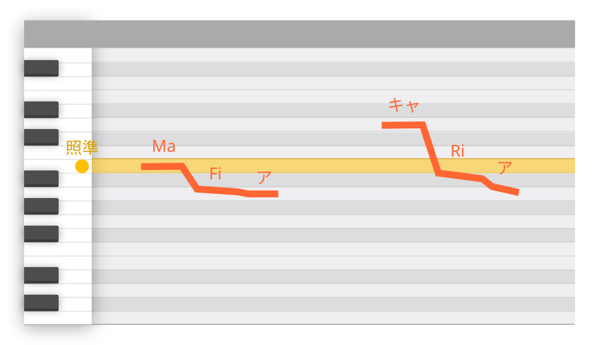
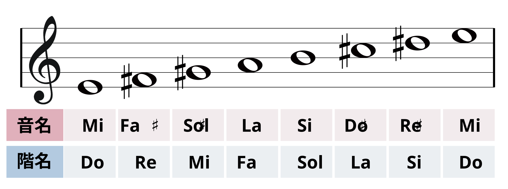
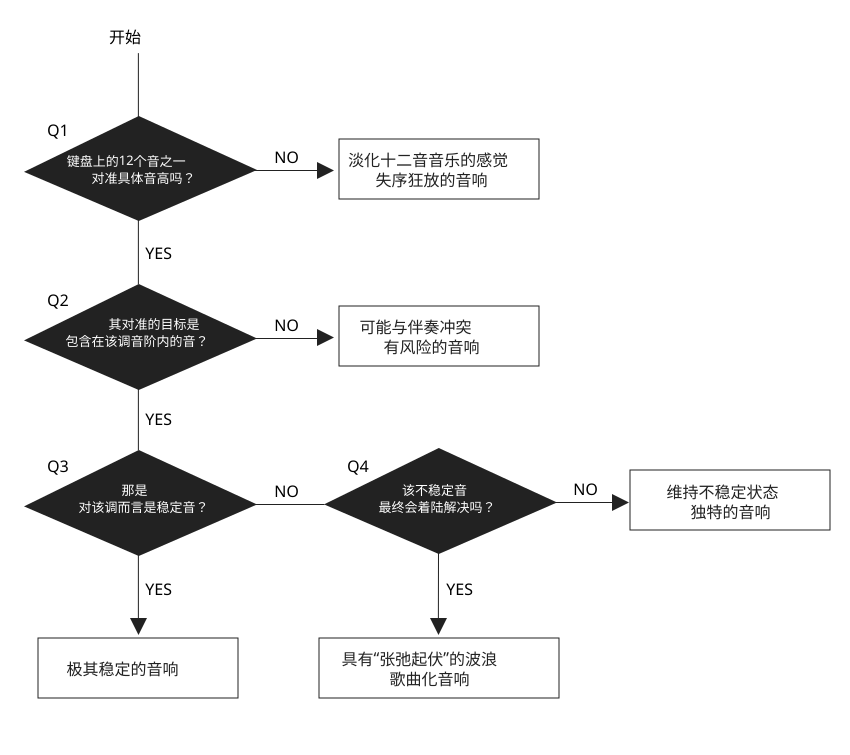

本文是在消化了截至“调性引力论 ❸ 内核音”的内容基础上，将研究对象从普通人声歌曲旋律切换为“说唱（Rap）”展开的专题研讨。如果不涉及说唱创作，直接跳过本文继续后文的学习也完全没有任何障碍。
 1. 说唱与音高感（Pitch Feeling）
1. 说唱与音高感（Pitch Feeling）
说唱音乐中 Flow（律动流势）的形态极其丰富多元：既有那种毫无钢琴键盘般的“音阶感”、宛如日常说话般的口白式说唱，也有与流行歌曲旋律无异的旋律化说唱（Melodic Rap）。此外，还有创作者原本并未刻意按音阶念白，而是通过自动修音（Auto-Tune）强行将其规整在音阶阶梯上的前卫风格。
能看出基准音高的说唱
在众多作品中，有相当一部分说唱虽然没有让听众强烈感受到“正在按着音阶歌唱”，但实际上其整个 Flow 始终在围绕着某一个特定音高展开起伏活动。我们通过几个实战案例来细细品味：
BUDDHA BRAND – 人間発電所（人间发电所）
例如开篇 CQ 和 DEV-LARGE 的 Verse（主歌段落），便是以 B♭ 音作为核心**瞄准点（Target Pitch / 锚定音高）**展开的。所谓“瞄准点”，指的是在给词句赋予重音时音调会高于它、句尾回落时会低于它，但若测算整段声音波动的“平均水位”，就会发现其牢牢锚定在此处。
滤除细碎的语调起伏后探寻其平均线，能清晰感知到正是以该音为基准。特别是“遠い国からはるばる殺しに”这一句，音高极其稳固，辨识度极高。
NAS – Represent
东海岸传奇 Nas 的这首经典之作，Verse 前半段则以微偏低的 B 音作为瞄准点。
随着歌曲的层层推演，锚定音高的基准线也在悄然攀升。从这个角度来看，瞄准音高也是掌控全曲能量氛围（Vibes）的核心维度之一。
Awich – WHORU? feat. ANARCHY (Prod. Chaki Zulu)
在 Awich 的第一段 Verse 中，极为清晰地以 B 音为中轴，围绕其周边音符进行说唱展开。在唱到“買う”时长音拉伸的地方，这一特征展现得尤为明显。
在拥有明确锚定音高的同时，对于“マフィア（Mafia）”“キャリア（Career）”这类词尾，严格遵循日语原词固有的声调抑扬进行发音，由此精准平衡了“歌唱性”与“说话感”的黄金比例。


与此形成鲜明对比的是客串的 ANARCHY：他的基准隐隐浮动在 D～E 音附近，但音高弯曲滑动的幅度极大，充分释放了键盘所无法框定的微音程表现力，在听觉上真正做到了字面意义上的“无政府主义（Anarchy）”。
局部音高稳固的说唱
当然，在一首歌曲中，完全没有固定音高的念白段落与音高高度收敛的段落交相辉映，也是极为普遍的手法。特别是在全曲最核心的关键节点赋予其鲜明的旋律感，往往能让歌词本身的文字力量与歌唱旋律的情感穿透力产生强烈的乘法共振。
在这首作品中，首段 Verse 的音高感相对随性自由；而从副歌 Hook 开始，音高瞄准点逐渐向 D 音聚拢，到了核心句“永遠に消えない謝罪の気持ち”处，极为清晰地锁死在了 D 音上。
到了第二段 Verse，随着乐段推进，焦点再度稳步向 D 音汇聚。 在这首作品中，剖白内心情感的 Verse 采用口白式的自由音高，而在向听众传递重磅讯息的 Hook 则采用带有歌唱美感且稳固的音高，段落之间的情绪反差对比被处理得极为精妙。
GOMESS – Freestyle 现场（2017.9.4 下北泽 THREE）
整段如同喃喃自语的倾诉，音高极具弹性与柔韧性。然而从 2:05 开始反复出现的“HipHopっていうのは”这一乐句，仔细聆听会发现 4 次重复近乎采用了完全一致的音高。对应到键盘上，“HipHop”的“ヒ”落在 F 音，随后平稳滑落到 D 音。
这可以说是“乍听之下仿佛在嘶吼呐喊、毫无音高可言，实则暗含极其精准音高骨架”的极致临界点。看似纯粹的说话态，骨子里却流淌着动人的歌唱灵魂，这也正是说唱艺术深不可测的魅力体现。
音高的曲线与直线
正如上述案例所示，说唱在音高维度上呈现出从“大幅波动”到“高度恒定”的连续光谱（渐变谱系），而在同一个乐段内灵活切换这种形态，能为音乐注入无穷的色彩。

键盘乐器只能机械直白地弹奏离散固定的台阶式直线音高，但人声说唱却能自如勾勒蜿蜒曲折的平滑曲线。在这条曲线中，既可以存在一个统领全局的锚定音高，也可以完全打破这种锚定。 哪怕确立了瞄准点，也绝非死板地将其钉在某个音上，而是顺应词汇固有的声调，或特意打破原有声调施加重音，共同构筑了独具辨识度的 Flow。
锚定点的上下取向（Upper / Downer）
确立了瞄准点之后，歌词词调如何相对于该瞄准点进行布局，同样存在截然不同的艺术抉择。以日语词汇“冷たい（tsumetai / 冰冷）”为例，其原词声调通常是居中的“めた”偏高，两侧的“つ”和“い”偏低：

若要在保留该抑扬走向的前提下填入说唱，大体有两种应对策略：

- ① 上扬型（Upper）：起音就已经处于锚定音高，重音位置向上挺拔冲刺。
- ② 下沉型（Downer）：重音位置“めた”落在锚定音高上，其余音节向下俯冲沉潜。
显而易见，前者更容易营造激昂亢奋（Upper）的听感，而后者则更易传递低沉压抑（Downer）的情绪。 创作者完全可以采取“平时以低沉型为主轴推进，唯独在需要强调的关键重音处切换为上扬型”的混合策略，同时达成“稳定的音高锚定”“自然的语言抑扬”与“饱满的情绪张力”。

自动修音（Auto-Tune）
顺便一提，在说唱人声上挂载 Auto-Tune 插件，其物理本质正是强制性地将原本平滑连续的曲线音高整流为离散阶梯状的固定音高。

而在阶梯跳跃的转折瞬间所产生的机械电音瞬态，正是大众熟知的标志性“电音质感（T-Pain 效果）”。
与伴奏 Beat 的协和与冲突
有趣的是，在我们上面列举的 5 个实战范例中，说唱歌手们所选取的基准音高无一例外与伴奏 Beat 的调性（Key）达成了极高程度的调和。换言之，他们选取的都是伴奏所使用的音阶成员音，并且是即便持续连打也听感极其稳固的“骨干音”。凭借多年摸爬滚打的实战经验，顶尖 MC 早已在潜意识中淬炼出了在伴奏之上精准找到听感最舒适音位来展开说唱的听觉本能与硬核技巧。 退一步讲，即使用 Auto-Tune 进行修音，如果修出来的音高与伴奏底层和声严重刺耳冲突，听众依然会本能地产生排斥违和感。当某种 Flow 听起来让人觉得“抓耳舒服”或“别扭怪异”时，其底层往往深刻牵涉着伴奏调性与说唱音高的互涉关系。 下面我们将深入探讨：说唱音高在伴奏调性中的相对位置，到底会诱发出怎样的听觉心理色彩。
2. 说唱与旋律理论
我们首先粗略重温一下此前乐理中与本课题息息相关的核心脉络：
大调与小调
流行音乐的两大支柱是“自然大调音阶（Major Scale）”与“自然小调音阶（Minor Scale）”。每一个大调都存在一个与之血脉相连的“亲戚”小调，这两位亲戚的音阶构成音成员完全一致。

这种共生关系被称为“关系大小调（Relative）”。两者唯一的差异在于听觉认知中究竟是将 Do 还是 La 确立为核心重心。 当以 Do 为中心运转时，整体气质明朗开阔，称为“大调（Major Key）”；当以 La 为中心运转时，整体气质阴郁深沉，称为“小调（Minor Key）”。 在“首调唱名法（阶名系统）”中，无论物理绝对高度在何处，我们始终将大调中心称为 Do、小调中心称为 La 并由此排布唱名。


借助这一工具，我们可以将各种复杂物理调性全部置于同一套“Do-Re-Mi-Fa……”坐标系下进行横向归纳。
调性中的稳定音与不稳定音
在同一调性内部，各个音级的稳定性存在着显著的强弱落差。在大调中，Do、Mi、Sol 三个音是绝对的稳定音。

无论在哪个大调中，第 1、3、5 级的音符永远是稳定核心。 而正如我们在第 III 章将要详述的那样，在小调语境下，La、Do、Mi 三个音是绝对的核心稳定音，而 Sol 的稳定性则会明显削弱。

稳定/不稳定音与说唱的化学反应
这一核心概念在说唱音高选择中起到了决定性的指引作用：若选取稳定音作为瞄准基准，说唱便会获得字面意义上坚如磐石的音响稳定感；而若选取不稳定音作为基准，则会在听众心头激起某种无法尘埃落定的悬念与波澜。回顾开篇的 5 个经典范例，其选择的全部无一例外是稳定音：
| 作品 | 调性 | 瞄准音高 | 对应首调阶名 |
|---|---|---|---|
| 人間発電所 | B♭ Major | B♭ | Do（大调中心） |
| Represent | E Minor | B | Mi（小调稳定音） |
| WHORU? | B Minor | B | La（小调中心） |
| 漢 back | B Minor | D | Do（小调稳定音） |
| GOMESS Freestyle | G Minor | D | Mi（小调稳定音） |
无一例外，全部分布在 La、Do、Mi 之中！这绝非作者刻意挑选的幸存者偏差，在真实的 Hip-Hop 世界中，稳定音确实占据了绝对压倒性的主流。虽然说唱本就拥有不受音阶束缚的绝对自由，但一旦创作者意图让 Flow 贴合音阶，选取稳定音永远是最稳妥、最坚实的标准解。 其中 Nas 的《Represent》案例尤为引人深思：这首曲子的采样伴奏音高较为特殊，介于标准 E 与 E♭ 之间，明显偏低[3]。令人叹为观止的是：Nas 的说唱瞄准点同样精准顺应了伴奏的下沉，分秒不差地锚定在比标准 B 音略低的物理音高上！ 这雄辩地证明了顶尖说唱歌手是通过敏锐的听觉肉身本能，在微音程维度上自适应贴合伴奏音高的。 而正如内核音理论所昭示的那样，即便同属“稳定音”或“不稳定音”，各个音级之间也具有截然不同的色彩性格。下面我们逐一剖析不同音级在说唱中的听觉画像。
3. 小调伴奏（Minor Key）上的说唱
在 Hip-Hop 音乐中，暗黑、冷峻的小调伴奏占据了半壁江山。我们首先横向对比在小调 Beat 上选取不同音级作为锚定点的听觉差异。
以 La 为瞄准点的说唱
作为小调音阶的绝对王牌中心音，La 具备最顶级的安稳感与定海神针般的统御力。
BAD HOP – Kawasaki Drift
打开音乐示例 ↗（调性：D♯ Minor）
副歌 Hook 部分的核心音高牢牢锁死在 La 上。由于挂载了 Auto-Tune，音高轮廓一目了然。La 在声学上极其稳固，因此极易唤起一种毫无畏惧、目空一切的霸气，极度契合说唱中自夸炫耀（Self-boasting）的硬核气场。 Verse 部分各位成员大秀各具特色的自由 Flow，随后在副歌中通过规整的中心音 Auto-Tune 实施强力收束，张弛转换极为老练。例如那声极具洗脑魔力的“Skrr, skrr”，其音高恰好落在了不稳定音 Sol 上，充当了打破副歌沉稳秩序的绝佳搅局者。 此外在编曲层面，陷阱乐（Trap）中的 808 贝斯往往沉重地长音盘踞在 La（主音）上，因此说唱以 La 为基准，相当于直接与 808 贝斯形成了同度共振（Unison），使得整段声音获得了毁天灭地般的厚重力量感。
The Notorious B.I.G. – Suicidal Thoughts
打开音乐示例 ↗（调性：G Minor）
Biggie 首张传奇专辑《Ready to Die》的终曲。从 0:43 开篇便以 La 为基准展开。虽然伴奏鼓点加入后音高起伏稍显丰富，但在“worst / purse”等至关重要的双押单押韵脚处，始终如一地稳稳砸在 La 上；2 分钟过后的“People at the funeral”等乐句，再度回撤至 La 的平稳怀抱。 整首歌的贝斯同样在执拗地长鸣着主音 La，面对这样的低频轰鸣，说唱在音高上寸步不让地选择死守 La，反而制造出一种极具窒息感的单调灰色（Monotone）死寂。在整张专辑充满华丽技巧 Flow 的大背景下，这首围绕心跳声开场并以心跳骤停终结的“自杀遗言”之作，选取这种毫无起伏、心如死灰的音高进行倾诉，堪称顶级艺术审美。
与押韵（Rhyme）的联动锁合
一种高级实战技巧是：在主干叙述时采用自由音高，而在落韵的瞬间突然精准撞击稳定的核心音高，借此将押韵的高光时刻成倍放大。
Gottz & MUD – Cook Good
打开音乐示例 ↗（调性：F♯ Minor，微偏低）
注意第 2 段 Verse：在“シューズ（Shoes）”“結ぶ（Musubu）”“ブンブン（Bumbum）”等核心韵脚处，音高猛然向上跳跃，精准锁死在稳定的 La 上。“抵达中心音”在听觉心理上能给予听众强烈的圆满解脱感，由此实现了“韵脚卡点爽感 + 归宿中心音爽感”的双重颅内高潮。
以 Do 为瞄准点的说唱
在小调伴奏中以 Do 为瞄准点展开说唱，蕴含着两大深层心理效应：其一，音位比中心音高出数度，会带来更轻盈的浮游悬浮感；其二，由于 Do 是大调的核心主音，发出这个音会让整首小调音乐中渗入一丝明亮的大调光彩。
JJJ – STRAND feat. KEIJU (Prod by KM)
打开音乐示例 ↗（调性：D Minor，微偏低）
主歌 Verse 极为鲜明地以 Do 音为中轴展开。与前文那种“锚定主音、君临天下”的沉重感相比，这里呈现出一抹飘逸的飞升感与微光，除了音色差异外，说唱音高的微妙落位起到了决定性的化学作用。
ishDARR – Sugar
打开音乐示例 ↗（调性：G♯ Minor）
前 20 秒音高相对随性，随后逐渐收敛在Do 与 La 之间的往返穿梭中。由于 La 作为基准频繁出现，Do 处于其上方高位的空间对比感格外鲜明。 这是一首情歌，与其摆出一副冷酷孤高的帝王姿态（死守主音 La），不如展现出主动向对方敞开心扉倾诉的柔和对话感。在这一语境下，以 Do 为核心瞄准点堪称天作之合。
以 Mi 为瞄准点的说唱
与 Do 类似，Mi 音同样能借由远离中心音来激发昂扬的情绪张力；但作为更高音位的五音，其激昂度远超 Do，并且不同于 Do，它不会带来任何偏向大调的明媚感，反而散发出强烈的悬疑、紧绷与神经质张力。
Jinmenusagi & DOT.KAI & ghostpops – Itchy/Tasty
打开音乐示例 ↗（调性：B Minor）
封面上印着伊藤润二惊悚漫画角色富江的肖像，歌曲采样了《生化危机》中经典的丧尸日记名言“痒、好吃（かゆい うま）”。而这句不断连打的洗脑采样，其音高恰好是 Mi 音！随后的 Verse 同样在 Mi 上紧绷盘旋，直到 1:09 唱到“窮屈（窒息局促）”时，才终于向上挣扎逼近中心音 La。 面对如此阴森诡异的纯正惊悚题材，若将“痒、好吃”放在沉稳踏实的 La 上念白，那种毛骨悚然的惊悚感必定荡然无存。用悬而未决、神经紧绷的 Mi 音来烘托歇斯底里的崩溃感，堪称神级选音。
SALU – Tokyo Zombie
打开音乐示例 ↗（调性：A Minor）[4]
又是一首丧尸题材佳作。本曲形成了极度工整的段落对比：Verse 锚定紧绷的 Mi，Hook 骤转为释然稳固的 La。 从歌词叙事来看，主歌罗列着“欲望、病毒、感染”等窒息压抑的词汇，而副歌则豁然开朗，喊出带有超现实波普狂欢色彩的洗脑口号“神奈川丧尸，我们都是丧尸”。针对紧张与释然的情感分野，分别匹配高张力的 Mi 与绝对安全感的 La，构成了教科书般的声学戏剧化排布。
STUTS – Mirrors feat. SUMIN, Daichi Yamamoto & 鎮座DOPENESS
打开音乐示例 ↗（调性：G♯ Minor）
Daichi Yamamoto 的主歌以 La 为锚点稳扎稳打；而接棒的鎮座DOPENESS 则将瞄准点抬高至 Mi，并不时点缀 La 与 Fa。两位说唱歌手音区高低的错落对比极富戏剧张力，远离中心音的鎮座DOPENESS 浑身散发着一种游戏人间般的放浪与漂泊游离感。
以 Sol 为瞄准点的说唱
在小调中，除了 La、Do、Mi 以外的音符均属于不稳定音。若以不稳定音作为瞄准点展开说唱，通常有两种策略：要么最终稳妥“解决”到稳定音上（对听众友好的大众化构架），要么从头到尾拒不解决（前卫先锋的实验派手法）。
Jin Dogg – How High (feat. MonyHorse)
打开音乐示例 ↗（调性：A Minor，微偏低）
从 0:32 的“Excuse Me”至“白い玉”区间，展现了标准的**“以 Sol 为锚点展开 → 句尾上扬至 La 解决落定”**的顺滑构架。与全程死守 La 相比，由于大半时间潜伏在低于 La 的不稳定阴影区，为乐句蒙上了一层独特的颓废倦怠韵味。
刻意在不稳定音上落韵
反向思考的极致手法是：故意将最重要的韵脚硬生生卡在不稳定音上，以此制造强烈的悬念与听觉出挑感。
DDG – Moonwalking in Calabasas Remix (feat. Blueface)
打开音乐示例 ↗（调性：E Minor）
主干音高稳如泰山地立足于主音 La，但唯独在“rich / bitch / shit”等每句最关键的韵脚尾音处，陡然向上挑高刺入极其不稳定的 Ti 音！这一离调倾向瞬间撕裂了原本沉闷的空气，在吐出韵脚后的停顿留白中留下了紧绷欲裂的戏剧悬念；而紧接着在下一乐句开篇重新回归 La，张力瞬间得到抚平。这套反向操作展现了炉火纯青的控场力。
以 Re 为瞄准点的说唱
Awich, 唾奇, OZworld, CHICO CARLITO – RASEN in OKINAWA
打开音乐示例 ↗（调性：C♯ Minor）
唾奇的 Verse 开篇游走于 Do 与 La 的平稳区间，进入三连音 Flow 后音高大幅晃动，随后在“若さに任せ馬鹿騒ぎしていた（恃强年轻肆意胡闹）”处，全面切换为以 Re 为瞄准点的状态。不稳定音所自带的那种浮躁、迷茫与惴惴不安，与放浪形骸的歌词语义达成了高度的互文。 随后在唱到“Queen”时再度跃升至 Mi 的区间——形成了 Do → Re → Mi 步步高升的音高阶梯推进。无论这是来自理性的精心计算还是纯粹的艺术家直觉，都在短短一段 Verse 内雕琢出了层次分明的交响式戏剧展开。
在同一段 Beat 下感受音高跃迁
为了更直观地在恒定背景下感受音高落位的相对质感，我们来看一场说唱对决（Freestyle Battle）中的现场实况：
打开音乐示例 ↗（调性：G Minor）
请重点注意后攻选手 ID 在第一回合的表现： 一开嗓，其进场音高散发着极度优雅从容的成熟帅气——这是因为他精准锁死了 Do 音。选取高于主音的位置，赋予了乐句独有的从容轻盈感。 随后在“つかつかつか”处音调拔高，毫无误差地精准卡入 Mi 音；接着在“今やろ”挑起的瞬间，直刺 Sol 音。在 Mi 与 Sol 的高频对攻中，完成了前半程 8 个小节的铺陈。 到了后半程 8 小节开启的“ならば goddamn”处，音高重新回落——丝毫不差地完美再归于第 1 小节开头的 Do 音！在长达 16 小节的即兴对抗中，为了避免听觉疲劳，选手在音高调度上具备极其清晰的前后半场统筹意识。 更有甚者，到了第二回合，他一改常态，开局便以高音 Sol 实施超高压制打击，以雷霆万钧之势在气场上压制对手；而在终盘最强卡点爆发“Le Let’s go”处，以迅雷不及掩耳之势狠狠砸在 Do 音上完成落地解决。能够凭借即兴本能在 Freestyle 中将“以稳定音为锚点、调度不稳定音穿插制造悬念、终盘雷霆解决”演绎得如此出神入化，展现了令人叹服的音乐才华。
4. 大调伴奏（Major Key）上的说唱
在 Hip-Hop 领域中，明朗温暖的大调伴奏相对属于少数派，在此我们做简要归纳：
以 Do 为瞄准点的说唱
在大调中，Do 是绝对的主音之王，最富稳定感；而原本在小调中充当主音的 La 则退化为带有阴郁色彩的不稳定音。
加山雄三 feat. PUNPEE – お嫁においで 2015
打开音乐示例 ↗（调性：F♯ Major）
在 0:38 的 Verse 中，PUNPEE 牢牢以 Do 为基准展开。作为无可撼动的最强稳定音，为天真浪漫、无忧无虑的叙事内容提供了稳如磐石的和声托底。
以 Mi 为瞄准点的说唱
在大调中，Mi 音是定义其“阳光明媚”听感的核心灵魂旗帜。远离中心音的属性赋予其浓郁的情感饱满度，同时在本质上极大强化了大调的欢快底色。
打开音乐示例 ↗（调性：F♯ Major，微偏低）
同样是乐天派的叙事主题，但由于以主音上方三度的 Mi 作为瞄准点，整体听感明显比 Do 更加轻盈欢快、如沐春风。在副歌拼写“H.A.P.P.Y”时，音高更是进一步冲刺到了更高的 Sol，将阳光灿烂的主题呈现得酣畅淋漓。
以 Sol 为瞄准点的说唱
Nujabes – Luv (sic) Pt.2 Acoustica
打开音乐示例 ↗（调性：D Major）
由 Shing02 担纲说唱。全曲 Verse 罕见地通篇以 Sol 为瞄准点，处于相当高亢的音位。在大调中，五音 Sol 具备绝对的声学稳定性，无需强求向 Do 回归解决。 然而，远离中心音的物理事实依然带来了强烈的空灵漂浮感。歌词中充斥着诸多关于“天空”“苍穹”的意象，这种云端漫步般的悬浮感或许正是有意为之的美学设计。 （顺带一提，在 Nujabes 原版伴奏中，说唱的音高滑动远比此不插电版剧烈；两种不同音高形态的说唱演绎极具对比鉴赏价值）。
以 Re 为瞄准点的说唱
作为紧邻中心音上方二度的不稳定音，Re 具备某种其他音级无可比拟的独特“轻盈升腾感”。
志人 · 菅大冲 – ニルヴァーナ-涅槃寂静-
打开音乐示例 ↗（调性：C Major）
这首兼具哲学禅意与歌唱美感的作品，近乎偏执地将 Re 的升腾感开发到了极致。 Verse 虽以主音 Do 起步，但在“傷だらけ”处猛烈拔高至 Re，并在随后的长篇乐句中疯狂循环“Re → Do”的不稳定到稳定解脱。这种引力拉扯成为了整首作品的灵魂核心，到中盘甚至出现了长时间完全锁死在 Re 音上纹丝不动的绝妙悬浮状态。
5. 多声部说唱与和声共鸣
当多位说唱歌手齐聚、以齐唱（Unison）方式演绎同一乐句时，为了让不同音色和谐交融，往往会不约而同地依靠听觉本能各自落位在不同的稳定音上，从而自发生成美妙的人声和声。
TABOO1 – 禁断の惑星 feat. 志人
打开音乐示例 ↗（调性：F♯ Minor）
开篇极富机械质感的“ここは禁断の惑星……”由两道人声重叠演绎，其音高严丝合缝地分别叠置在 La 与 Mi 上；随后在 1:36 的段落中，依然稳定维持在 La 与 Mi（或 La 与 Do）的和声重叠上，直至推进到下一赛段。
I C E B AHN – LEGACY
打开音乐示例 ↗（调性：C♯ Minor）
副歌由全员合力轰鸣，侧耳细听便能捕获其背后的离散音高架构：
在“始まりのREC”等核心节点，低音轨道的平均瞄准点落在 Mi，高音轨道则落在 La。为了在至关重要的歌曲名核心记忆点打出最强重击，全员凭本能精准落位在最稳固的稳定音上，形成了互补的声部层次。
我们将说唱在音高维度上的取舍抉择，总结为如下清晰的决策流程图（Flow-chart）：


- 选取顺应 Beat 调性的音高，能收获天衣无缝的浑然一体感；反其道而行之，则能实现破屏而出的解离张力。
- 为押韵赋予稳定音高，能带来尘埃落定的决绝定格；若赋予不稳定音高，则能留下意蕴深远的悬念余响。
并没有哪一种选择拥有绝对的道德高下。然而，真正顶尖的大师之所以能够创作出神入化的作品，是因为他们深刻通晓：哪怕不是在五线谱上歌唱旋律，念白中音高的毫厘之差也绝非无关紧要，而是能够深刻颠覆一首歌曲的情感宇宙。 此外，当你清晰洞悉了自己的舒适发声黄金音区后，完全可以从“自己想让核心唱词充当伴奏调性中的第几度音”出发，逆向倒推并挑选最适合自己的伴奏调性： 如果你的舒适发声音高是 D，那么选择 D 小调伴奏就能展现稳如泰山的统治力；选择 G 小调伴奏则能营造出高亢激昂的奋进感；而选择 C 大调伴奏则能展现出奇妙的悬浮与倾诉感…… 传统乐理因牢牢锚定在 12 平均律键盘上，在面对微音程与口语说唱时难免偶显生硬。但只要我们善于拆解其核心逻辑，音乐理论同样能成为 Hip-Hop 创作者最锋利的破局利刃。
总结
- 在说唱流动的语调起伏中，往往潜藏着一个作为中轴重心的“锚定音高（Target Pitch）”。是否设置锚定点、以及将其设置在何处，是衡量 Flow 质感的核心考量。
- 锚定音高是否属于伴奏调性的音阶、以及它究竟是稳定音还是不稳定音，构成了风格分化的分水岭。
- 若追求稳如泰山的音响控制力，应优先以稳定音为瞄准点，或将不稳定音顺畅解决至稳定音。
- 尤其在韵脚处赋予其鲜明的音高色彩，能将语言文本的爆发力升华为更深层次的音乐性震撼。